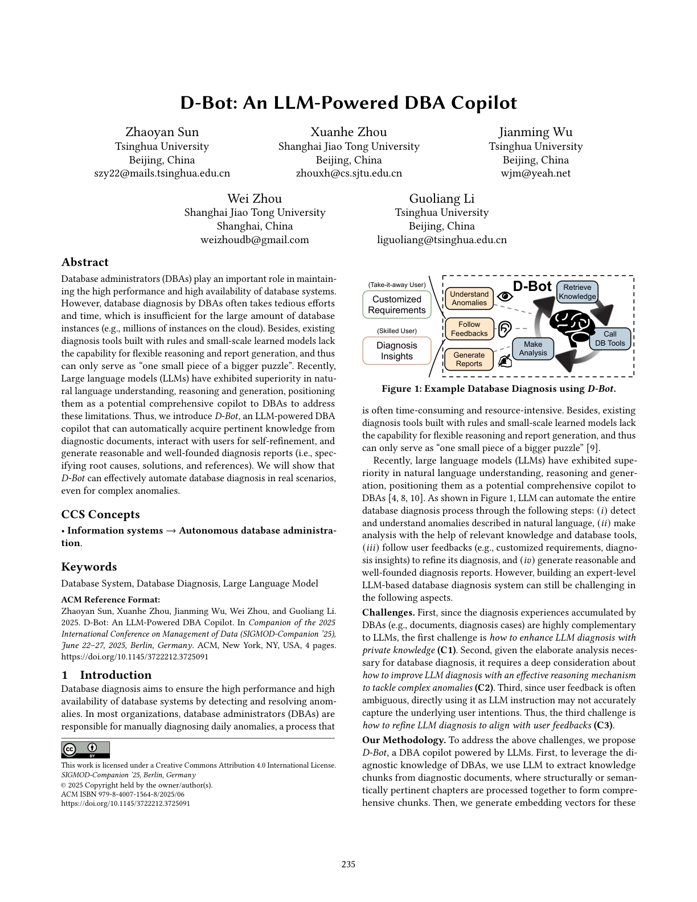
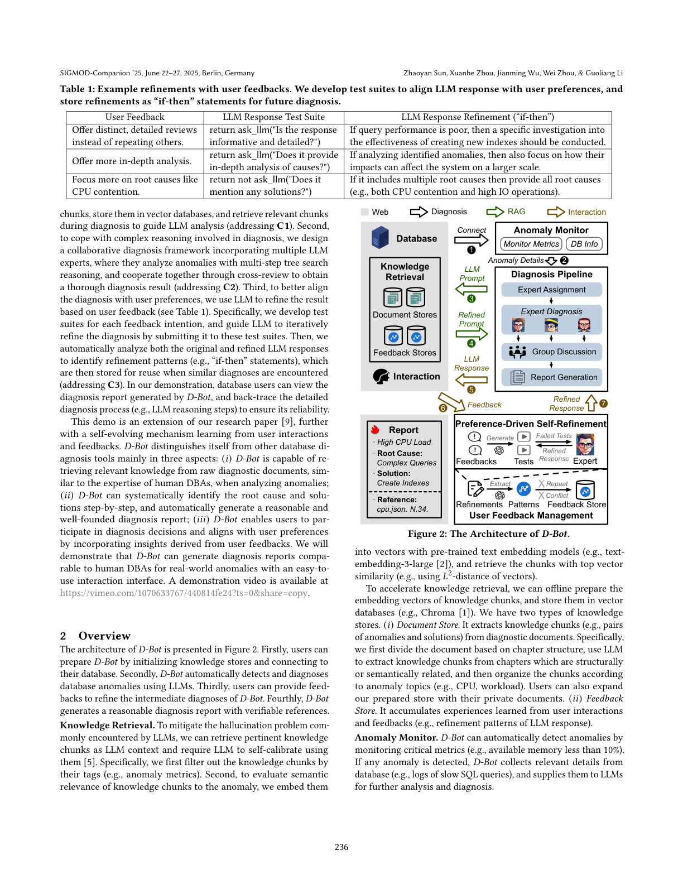
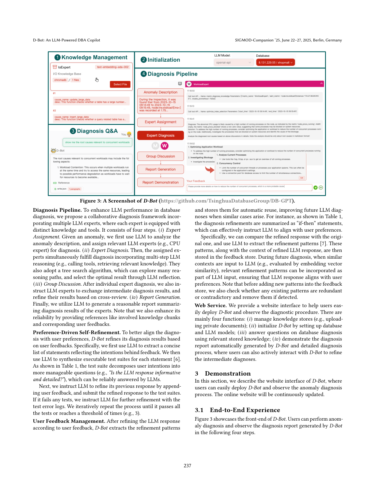
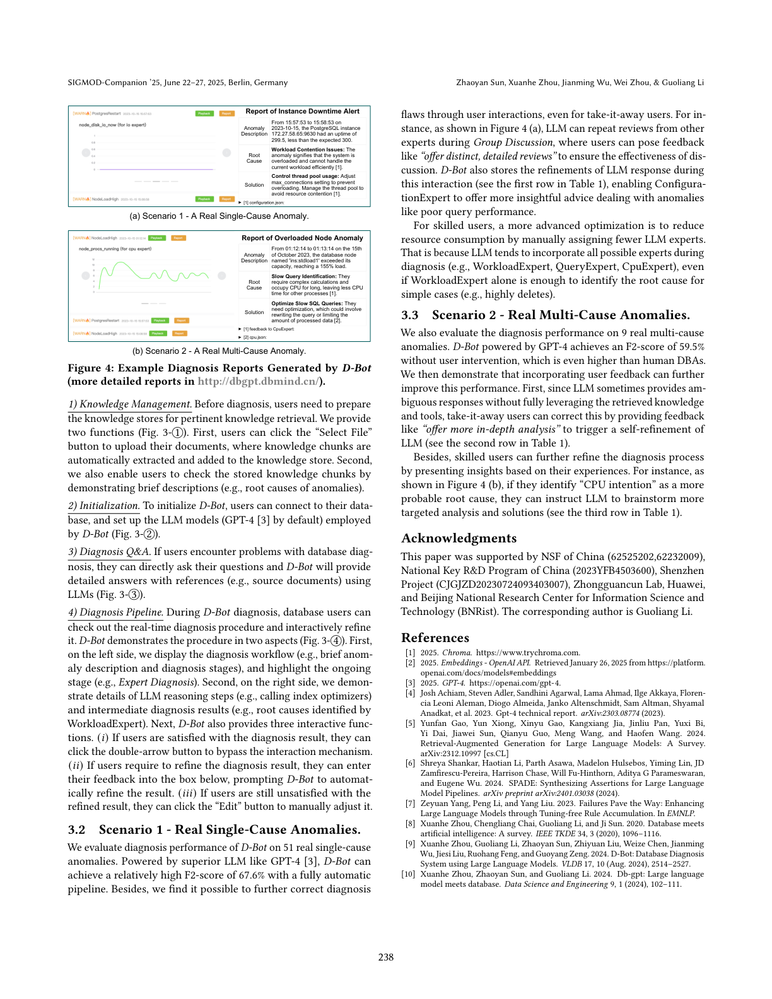

从诊断文档自动获取知识、与用户交互自我精炼，并生成基于根因、方案与引用的诊断报告
数据库管理员（DBA）在维持数据库系统的高性能与高可用性方面发挥着重要作用。然而，DBA 进行数据库诊断往往需要繁琐且耗时的努力，难以应对海量数据库实例（例如云上数百万实例）。此外，基于规则与小规模学习型模型构建的现有诊断工具缺乏灵活推理与报告生成能力，只能作为「更大拼图中孤立的一小块」。近来，大语言模型（LLM）在自然语言理解、推理与生成上展现出优势，使其成为 DBA 潜在的全面副驾驶，以弥补这些局限。为此，我们提出 D-Bot——一个由 LLM 驱动的 DBA 副驾驶，能够：从诊断文档中自动获取相关知识、与用户交互以实现自我精炼，并生成合理且有据可依的诊断报告（即指明根因、解决方案与参考文献）。我们将展示，即便面对复杂异常，D-Bot 也能在真实场景中有效自动化数据库诊断。
数据库诊断旨在通过检测并解决异常，保障数据库系统的高性能与高可用性。在大多数组织中，DBA 负责手动诊断每日异常，这一过程往往耗时且耗费资源。此外，基于规则与小规模学习型模型构建的现有诊断工具缺乏灵活推理与报告生成能力，只能作为「更大拼图中孤立的一小块」。近来，大语言模型（LLM）在自然语言理解、推理与生成上展现出优势，使其成为 DBA 潜在的全面副驾驶。如图 1 所示，LLM 可通过以下步骤自动化整个数据库诊断流程：(i) 检测并理解以自然语言描述的异常；(ii) 借助相关知识与数据库工具进行分析；(iii) 遵循用户反馈（如定制化需求、诊断洞见）精炼诊断；(iv) 生成合理且有据可依的诊断报告。然而，构建一个专家级的、基于 LLM 的数据库诊断系统仍面临以下挑战。

挑战（Challenges）。 首先，DBA 积累的诊断经验（如文档、诊断案例）与 LLM 高度互补，第一个挑战是如何用私有知识增强 LLM 诊断（C1）。其次，鉴于数据库诊断所需的精细分析，需要深入思考如何用有效的推理机制改进 LLM 诊断以应对复杂异常（C2）。第三，由于用户反馈往往含糊，直接将其作为 LLM 指令可能无法准确捕捉用户的潜在意图，因此第三个挑战是如何精炼 LLM 诊断以与用户反馈对齐（C3）。
我们的方法（Our Methodology）。 为应对上述挑战，我们提出由 LLM 驱动的 DBA 副驾驶 D-Bot。首先，为利用 DBA 的诊断知识，我们用 LLM 从诊断文档中抽取知识块（chunk），将结构上或语义上相关的章节一起处理以形成综合性知识块；随后为这些知识块生成嵌入向量，存入向量数据库，并在诊断时检索相关块以引导 LLM 分析（应对 C1）。其次，为应对诊断中涉及复杂推理，我们设计了一个融合多个 LLM 专家的协作诊断框架，它们通过多步树搜索推理分析异常，并通过交叉评审相互协作以获得透彻的诊断结果（应对 C2）。第三，为更好地使诊断与用户偏好对齐，我们利用 LLM 基于用户反馈精炼结果（见表 1）：为每个反馈意图开发测试套件，引导 LLM 将响应反复提交给测试套件以迭代精炼；随后自动分析原始与精炼后的 LLM 响应，识别精炼模式（如「if-then」语句）并存储以备类似诊断时复用（应对 C3）。
D-Bot 的架构如图 2 所示。首先，用户可通过初始化知识库、连接数据库来准备 D-Bot。其次，D-Bot 利用 LLM 自动检测并诊断数据库异常。第三，用户可提供反馈以精炼 D-Bot 的中间诊断。第四，D-Bot 生成带可验证引用的合理诊断报告。

知识检索（Knowledge Retrieval）。 为缓解 LLM 常见的幻觉问题，我们检索相关知识块作为 LLM 上下文，并要求 LLM 据此自我校准。具体而言，先按标签（如异常指标）过滤知识块；随后用预训练文本嵌入模型（如 text-embedding-3-large）将其嵌入向量，并以向量相似度（如 $L_2$ 距离）检索 top 相似块。为加速检索，可离线预计算知识块嵌入并存入向量数据库（如 Chroma）。我们维护两类知识库：(i) 文档库（Document Store），从诊断文档中抽取知识块（如异常—解决方案对），按章节结构切分、用 LLM 抽取相关块并按异常主题（CPU、负载等）组织，用户也可用私有文档扩充；(ii) 反馈库（Feedback Store），积累从用户交互与反馈中学到的经验（如 LLM 响应的精炼模式）。
异常监控（Anomaly Monitor）。 D-Bot 通过监控关键指标（如可用内存低于 10%）自动检测异常；一旦检测到，便从数据库收集相关细节（如慢 SQL 日志）提供给 LLM 进一步分析与诊断。
诊断流水线（Diagnosis Pipeline）。 为增强 LLM 在数据库诊断中的表现，我们提出一个融合多个 LLM 专家的协作诊断框架，每位专家配备不同的知识与工具，包含四步：(i) 专家分配——用 LLM 分析异常描述，分配相关专家（如 CPU 专家）；(ii) 专家诊断——被分配的专家同时执行诊断，结合多步 LLM 推理（调用工具、检索知识），并采用树搜索算法探索多条推理路径、通过 LLM 反思选取最优结果；(iii) 小组讨论——专家交换中间诊断结果，基于交叉评审精炼各自结果；(iv) 报告生成——用 LLM 汇总专家诊断结果生成合理报告，并通过提供知识块与对应用户反馈等引用增强可靠性。
偏好驱动的自动精炼（Preference-Driven Self-Refinement）。 为更好地使诊断与用户偏好对齐，D-Bot 基于用户反馈精炼结果：先用 LLM 抽取反映反馈意图的简洁陈述列表，再为每个陈述综合出可执行的测试套件（如表 1，将意图拆解为「LLM 响应是否信息丰富且详细？」等可由 LLM 可靠回答的问题）；随后指导 LLM 追加反馈精炼响应并提交测试套件，若未通过则结合测试错误日志进一步精炼，迭代直至通过或全部测试或达到次数阈值（如 3 次）。
用户反馈管理（User Feedback Management）。 精炼后，D-Bot 抽取精炼模式并存储以便自动复用；在相似案例出现时提升未来诊断效果。例如表 1 中的诊断精炼被归纳为「if-then」语句。具体而言，比对精炼前后响应，用 LLM 抽取精炼模式，连同精炼上下文存入反馈库；未来相似上下文输入时按嵌入相似度纳入相关模式。新增模式前还会检查是否与已有模式冗余或矛盾，若发现则移除。
Web 服务（Web Service）。 我们提供网站界面便于用户部署 D-Bot 并观察诊断流程，主要功能有：(i) 管理知识库（如上传私有文档）；(ii) 通过设置数据库与 LLM 模型初始化 D-Bot；(iii) 利用已存知识回答数据库诊断问题；(iv) 展示 D-Bot 自动生成的诊断报告与详细诊断过程，用户亦可主动交互精炼中间诊断。

本节描述 D-Bot 的网站界面，用户可轻松部署 D-Bot 并观察异常诊断流程，线上网站将持续更新。
图 3 展示了 D-Bot 前端。用户可通过以下四步进行异常诊断并查看报告：(1) 知识管理——上传文档自动抽取知识块入库，并可查看已存知识块；(2) 初始化——连接数据库并设置所用 LLM 模型（默认 GPT-4）；(3) 诊断问答——直接用 LLM 回答问题并附引用；(4) 诊断流水线——实时查看诊断流程并交互精炼，左侧展示诊断工作流与当前阶段、右侧展示 LLM 推理步骤与中间结果，并提供「跳过交互」「输入反馈精炼」「手动编辑」三种交互功能。

我们在 51 个真实单根因异常上评估 D-Bot 的诊断性能。借助 GPT-4 等强 LLM，全自动化流水线的 F2 分数达 67.6%。此外，即使对「甩手掌柜型」用户，也可通过用户交互进一步纠正诊断缺陷。例如图 4(a)，LLM 可在小组讨论中重复其他专家的评审，用户可给出「提供独特、详细的评审」等反馈以保证讨论有效；D-Bot 还会在此交互中存储精炼（表 1 首行），使 ConfigurationExpert 对查询性能差等异常给出更富洞见的建议。对熟练用户，更进阶的优化是手动分配更少的 LLM 专家以减少资源消耗——因为 LLM 倾向于纳入所有可能专家（如 WorkloadExpert、QueryExpert、CpuExpert），即使简单案例仅需 WorkloadExpert 即可定位根因。
我们在 9 个真实多根因异常上评估，GPT-4 驱动的 D-Bot 在无用户干预下 F2 分数达 59.5%，甚至高于人类 DBA。进一步引入用户反馈可提升该性能：一来，LLM 有时未充分利用检索知识与工具而给出含糊响应，甩手掌柜型用户可给「提供更深入的分析」等反馈触发自我精炼（表 1 第二行）；二来，熟练用户可基于经验给出洞见进一步精炼，例如图 4(b) 中若判断「CPU 争用」更可能是根因，可指示 LLM 头脑风暴更具针对性的分析与方案（表 1 第三行）。